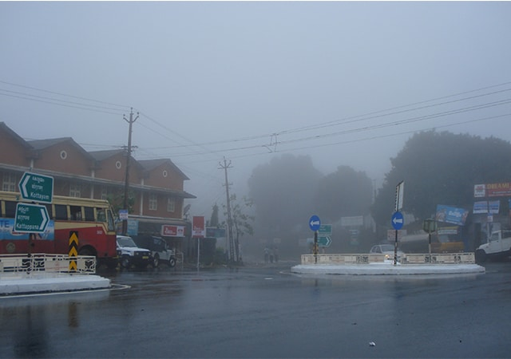
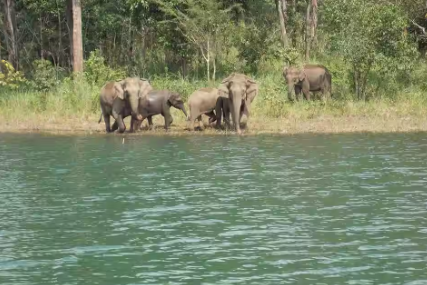
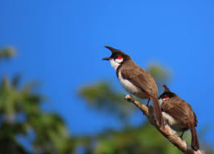

Climate
Kuttikkanam enjoys a pleasant and cool climate throughout the year, making it a sought-after destination for travelers seeking relief from the heat of the plains. Nestled at an altitude of around 3,500 feet above sea level, the region experiences a typical tropical highland climate with distinct seasons, each offering its own unique charm.
Summers in Kuttikkanam, from March to May, are mild and comfortable, with temperatures ranging between 15°C and 25°C. Unlike the scorching heat of the lowlands, the cool breeze and clear skies make it an ideal time for outdoor activities like trekking and nature walks. Many visitors head to Kuttikkanam during this time to escape the heat and enjoy the lush greenery and tranquil surroundings.
The monsoon season, from June to September, transforms Kuttikkanam into a verdant paradise. With temperatures between 12°C and 20°C, the region receives heavy rainfall, refreshing the hills and forests. The cascading Valanjanganam Waterfalls and mist-covered hills are at their most vibrant during this period. Though beautiful, the heavy rains can make trekking paths slippery, so visitors need to be cautious.
Winters, from October to February, are considered the best time to visit Kuttikkanam. With temperatures dipping to 10°C, the cold weather and frequent mist create a magical atmosphere. Early mornings and evenings are often blanketed in fog, adding to the charm. This season is especially popular with honeymooners and nature enthusiasts. Activities like plantation tours, campfires, and nature walks are widely enjoyed during this period.
Kuttikkanam’s high humidity during the monsoon contrasts with the more moderate levels experienced in summer and winter. Its abundant rainfall makes it one of the most fertile regions in the Idukki district. Overall, the favorable climate plays a vital role in enhancing the experience for visitors, whether they are trekking through lush landscapes or simply relaxing amidst nature’s tranquility.
Wildlife
Kuttikkanam is a haven for nature lovers and wildlife enthusiasts, thanks to its diverse flora and fauna. The region is surrounded by dense forests, misty hills, and plantations, creating a thriving habitat for a variety of wildlife species. The natural beauty of Kuttikkanam is enriched by frequent sightings of wildlife in their natural surroundings, making it a perfect destination for eco-tourism.
Mammals commonly spotted in the forests include Indian bison (gaur), wild boars, monkeys, and Indian giant squirrels. Among the primates, Nilgiri langurs and bonnet macaques are often seen in the treetops or along trekking trails. Occasionally, visitors might even catch a glimpse of the elusive leopards or jungle cats, though they usually remain hidden deep within the forests.
Kuttikkanam is also home to a rich variety of bird species, attracting birdwatchers from far and wide. Malabar hornbills, drongos, woodpeckers, bulbuls, and kingfishers are just a few of the colorful birds that can be observed in the area. During the early mornings, the forests come alive with their calls, creating a peaceful and enchanting experience for visitors.
Reptiles and amphibians are also part of the region's wildlife. The forests are home to several species of snakes, including rat snakes, vine snakes, and Indian cobras. Frogs, especially during the monsoon, can be heard croaking near streams and ponds.
The surrounding tea and cardamom plantations act as a natural corridor for wildlife, offering both food and shelter. Visitors trekking through these areas may encounter a variety of small mammals and exotic insects. The lush vegetation and abundance of water sources ensure a healthy ecosystem that supports this diverse range of species.
Preserving this natural wealth is crucial, and several eco-conservation efforts are in place to protect the wildlife of Kuttikkanam. For adventure seekers and nature lovers, a visit to Kuttikkanam offers a unique chance to experience the wild, up close and personal, in one of Kerala’s most pristine environments.
Conservation Efforts
Conservation efforts in Kuttikkanam are focused on preserving the region’s rich biodiversity, pristine forests, and delicate ecosystems to ensure that its natural beauty and wildlife are protected for future generations. Being part of the Western Ghats—a UNESCO World Heritage Site and one of the world's eight "hottest hotspots" of biological diversity—Kuttikkanam benefits from various local and national initiatives aimed at sustainable development and environmental protection.
The forests around Kuttikkanam are home to a wide variety of flora and fauna. Government agencies, along with local environmental organizations, work to safeguard these forests by implementing anti-poaching measures and monitoring wildlife populations. Awareness programs are conducted to educate local communities and tourists on the importance of preserving wildlife habitats, while patrols are maintained to prevent illegal activities such as logging and hunting.
To promote eco-friendly tourism, steps have been taken to minimize the ecological footprint of visitors. Many resorts and hotels in Kuttikkanam have adopted green practices such as rainwater harvesting, solar energy, and proper waste management systems. Eco-tourism projects and trekking routes are carefully designed to offer visitors a closer experience with nature without harming the environment.
Afforestation and reforestation efforts are a key part of conservation in Kuttikkanam. Native trees are planted to restore degraded forest areas and prevent soil erosion. These drives often involve schools, colleges, and local residents, encouraging community participation in protecting the environment. Similarly, water conservation efforts aim to maintain the purity of natural water bodies such as MBC Kulam and Valanjanganam Waterfalls, ensuring a sustainable water supply for both wildlife and local communities.
The local community plays a vital role in Kuttikkanam’s conservation efforts. Educational institutions like Marian College and Mar Baselios Christian College regularly organize environmental awareness programs and research initiatives focused on preserving the local environment. Local residents guide visitors on eco-friendly practices to ensure tourism does not negatively impact the fragile ecosystem.
Additionally, special attention is given to protecting the endangered and endemic species of the region. Collaborative efforts between the Kerala Forest Department and wildlife research organizations help safeguard these species and monitor their habitats. Restoration projects ensure they can thrive in their natural environments.
In summary, the conservation efforts in Kuttikkanam are a collective endeavor involving government bodies, local communities, environmentalists, and responsible tourists. These initiatives not only protect the region’s natural resources but also contribute to its sustainable development, offering a model for balancing tourism with environmental preservation.
Threats to Wildlife
One of the most pressing threats is habitat loss due to deforestation and land conversion. Expanding agricultural activities, tea and cardamom plantations, and infrastructure development have led to the destruction of natural habitats. Fragmentation of forests disrupts wildlife corridors, making it difficult for animals to migrate and find food and shelter. This loss of habitat also increases human-wildlife conflicts, especially in areas close to human settlements.
Poaching and illegal hunting are additional concerns. Although strict regulations are in place, illegal activities still occur in some remote areas. Species such as deer and wild boar are sometimes targeted, which affects the ecological balance of the region. Bison, a common sight in Kuttikkanam, also face threats from poachers.
Pollution and waste disposal pose a growing danger to the local ecosystem. Increased tourism and human settlements generate significant amounts of waste, which, if not managed properly, can harm the wildlife. Plastics and other non-biodegradable materials not only pollute water bodies but also threaten animals that might ingest or get entangled in the waste.
Lastly, the unregulated expansion of tourism can have a detrimental impact on the local wildlife. While eco-tourism can help promote conservation, uncontrolled tourism can lead to increased pressure on natural resources, noise pollution, and disturbance to wildlife habitats.